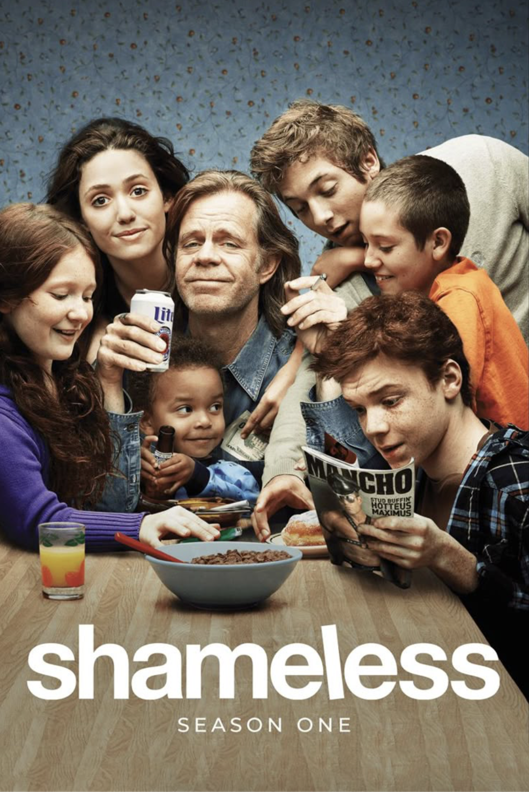
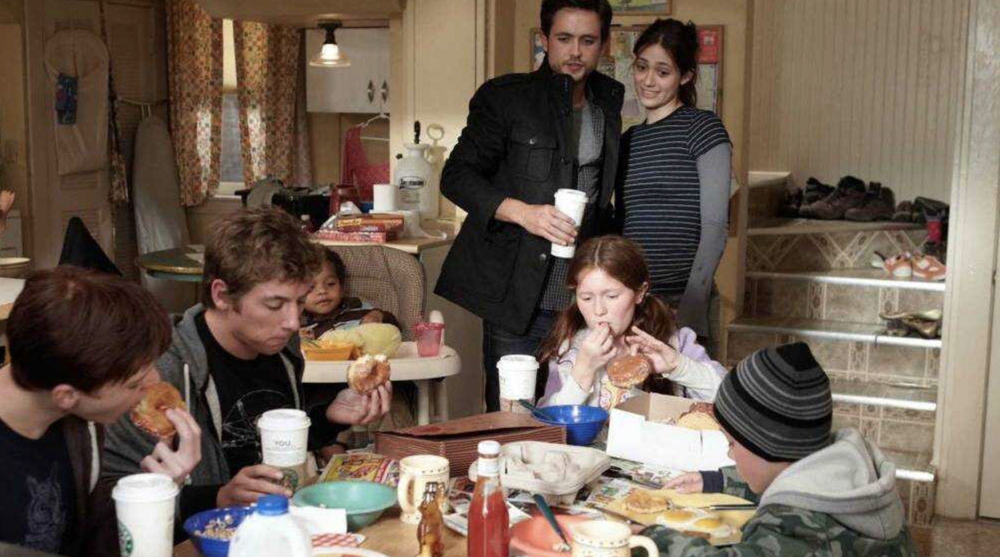
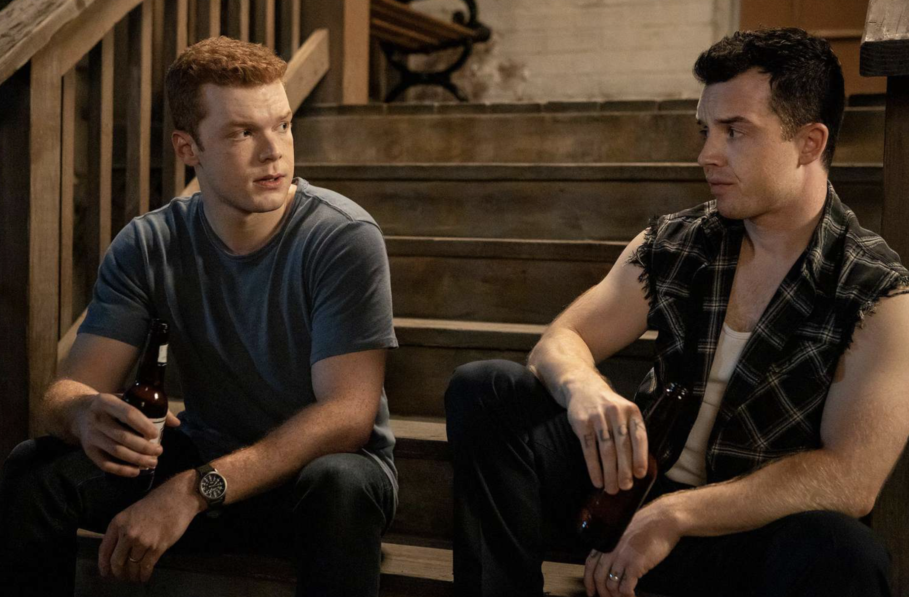

TV Psychology
Psychology Behind: Shameless
Exploring bipolar disorder through Ian Gallagher's journey in the chaotic world of the Gallaghers.
Exploring bipolar disorder through Ian Gallagher's journey in the chaotic world of the Gallaghers.

Picture this: you're perched on the edge of the Gallagher kitchen floor, laundry baskets strewn about and Ian Gallagher—your unlikely hero—bursting through the front door, teetering on the razor's edge of euphoria and desperation. If "Shameless U.S." is our chaotic canvas, bipolar disorder is the vivid palette of colors—some so bright they blind you, others so dark they swallow you whole. In this article, we'll dive deep into how the show brings bipolar disorder to life, exploring the science, the storytelling and the indomitable spirit of those who live with it—Shameless style.
When Ian's manic, it's like watching a runaway train fueled by adrenaline, questionable impulse control, and superb soundtrack choices. He's energetic ("let's break into a rich guy's house at 2 a.m.!"), charismatic ("trust me, I've got this"), and so sure of himself that every reckless plan feels destined for triumph—until it isn't. Clinically, mania is defined by an abnormally elevated mood lasting at least one week, paired with increased activity or energy, inflated self-esteem, decreased need for sleep, and often, risky behavior.

Ian's whirlwind romances, late-night escapades, and sudden career pivots (remember that paintball thing?) perfectly capture the DSM-5 criteria without sacrificing drama.
Yet, "Shameless" avoids sensationalizing manic episodes as mere "fun times." We witness the crash that follows—the guilt, the confusion, the exhaustion. In one haunting montage, Ian wanders the streets at dawn, literally running on fumes. He's euphoric and utterly alone. That contrast is crucial: mania doesn't wear a party hat forever. It's a storm that rages and then leaves devastation in its wake.
But then the pendulum swings. When Ian's depressive, the screen feels heavier—colors muted, energy drained. He withdraws from Mickey and his family, his typical spark reduced to embers. Depression in bipolar disorder isn't just sadness; it's a profound disruption of energy, motivation, and self-worth that can last weeks or months.

Ian's spiral hits home because it's so unremarkable: he simply stops showing up. Family gatherings feel like navigating a minefield of concern and frustration. Lip, Fiona, and the rest can't fix it with tough love or a pep talk; they can only stand by helplessly. The show deftly illustrates how loved ones often struggle to "get it"—because on the surface, Ian can seem fine, or worse, just "being difficult."
Medical definitions matter, but bipolar disorder is lived experience. "Shameless U.S." gives us a character who's neither victim nor villain, but deeply human. Ian's relationships—especially with Mickey—highlight how mood swings can ripple through intimacy: manic passion can feel like perfect love, depressive withdrawal like complete rejection. The show doesn't shy away from sexuality, substance use or identity exploration, reflecting the complex reality many with bipolar disorder face.
Importantly, Shameless shows treatment as an ongoing journey, not a one-and-done fix. We see Ian grappling with the side effects of medication—weight gain, grogginess, and often that dull "flat" feeling that sometimes comes with mood stabilizers. Therapy sessions happen off-screen, but their benefit echoes in his growing self-awareness, his willingness to ask for help, his gradual acceptance of a less "dramatic" life.
Let's unpack a bit of neuroscientific magic. Bipolar disorder involves dysregulation in neural circuits governing mood, reward, and executive function. The prefrontal cortex and limbic system (think decision-making and emotional processing) miscommunicate, hence the roller-coaster in Ian's behavior. Neurotransmitters like dopamine and serotonin bounce around erratically—high during mania, low during depression. Modern treatments—lithium, anticonvulsants, antipsychotics—work by tamping down those chemical surges and shoring up mood stability.
Genetics also play a starring role: first-degree relatives of people with bipolar disorder have a significantly higher risk. While the Gallaghers aren't a textbook genetic case study, Shameless hints at inherited resilience (and dysfunction). And environment counts too: chronic stress, trauma and substance misuse can exacerbate bipolar symptoms—famously embodied by the Gallaghers' relentless financial, legal and emotional turmoil.
Research shows that during manic episodes, there's often increased dopamine activity in the brain's reward circuits, which can explain the intense pleasure-seeking behaviors and inflated sense of capability. Conversely, during depressive episodes, these same circuits become underactive, leading to anhedonia—the inability to feel pleasure from activities that were once enjoyable.
If Shameless teaches us anything, it's that nobody thrives in isolation. Ian's breakthroughs happen when he leans on others: Mickey's steadfast loyalty, Lip's tough-but-loving nudges, Fiona's fierce protectiveness. Peer support groups, online forums, friend circles—these "Gallagher-style" safety nets are vital in real life too. Exercise, regular sleep routines, mindfulness, and creative outlets all help smooth out the peaks and valleys.
Perhaps most importantly, Shameless portrays treatment as multifaceted. It's not just about popping pills; it's therapy, lifestyle changes, support systems, and ongoing self-awareness. Ian learns to recognize his triggers, to reach out when he's struggling, and to accept help—a lesson that extends far beyond the screen.
Shameless doesn't sugarcoat relapse: even after periods of stability, Ian stumbles. But each setback is framed not as failure, but rather as a part of a chronic condition—manageable, not curable. That perspective empowers viewers who may see their own struggles mirrored on screen.
The Gallagher family's chaotic but unwavering support demonstrates how crucial social connections are for managing bipolar disorder. Research consistently shows that individuals with strong support systems have better treatment outcomes and lower rates of relapse.
Television often reduces mental illness to clichés: the "tortured genius," the "manic pixie dream girl," the "dangerous lunatic." Shameless obliterates those tropes by weaving bipolar disorder into a larger, messy tapestry of family, poverty, love, and survival. Ian Gallagher isn't defined solely by his diagnosis; it's one thread in a brilliantly chaotic tapestry.
By showing both the high-octane mania and the soul-crushing lows with equal weight, the show fosters empathy. We laugh, we cringe, we ache alongside Ian—and in doing so, we learn that bipolar disorder is neither a gimmick nor a tragedy, but a human reality deserving of understanding, research, and respect.
The show's unflinching portrayal helps combat the stigma that often surrounds mental illness. By presenting Ian as a fully realized character—flawed, lovable, frustrating, and human—Shameless challenges viewers to see beyond the diagnosis to the person underneath.
"Mental illness is not a choice, but recovery is a choice. And it's a choice that has to be made every single day." - This perspective, embodied by Ian's journey, reminds us that living with bipolar disorder is an ongoing process of daily choices and commitment to wellness.
So next time you settle in for Shameless, watch Ian through a new lens: not just as a combustible force of plot momentum, but as a window into the enigmatic world of bipolar disorder. Appreciate the scientific accuracy dancing beneath the show's irreverent humor, the grace notes of genuine emotion threaded into its riotous soundtrack. And remember: in life—as in Shameless—the path to balance is rarely straight, but it's always worth pursuing.
Here's to Ian Gallagher, and to everyone out there balancing on the bipolar tightrope, proving every day that the instability of mood can coexist with the stability of hope. Cheers—whether you're riding high or riding low, you're never truly alone.
If you or someone you know is struggling with bipolar disorder, help is available: